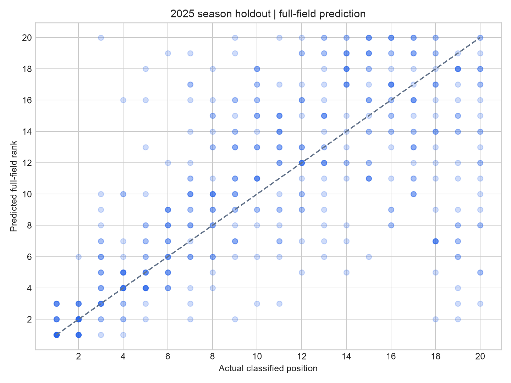
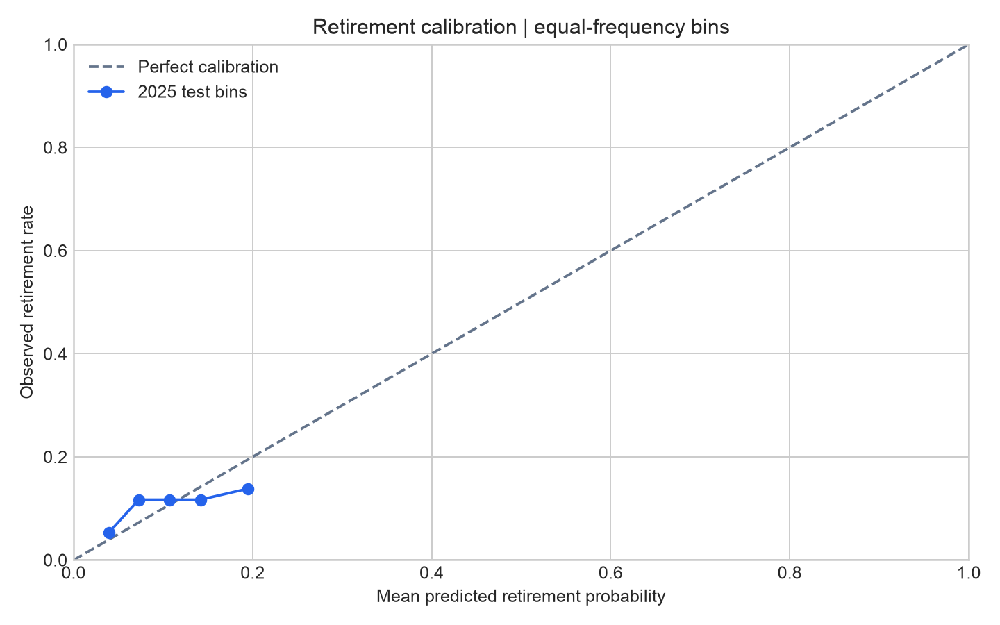
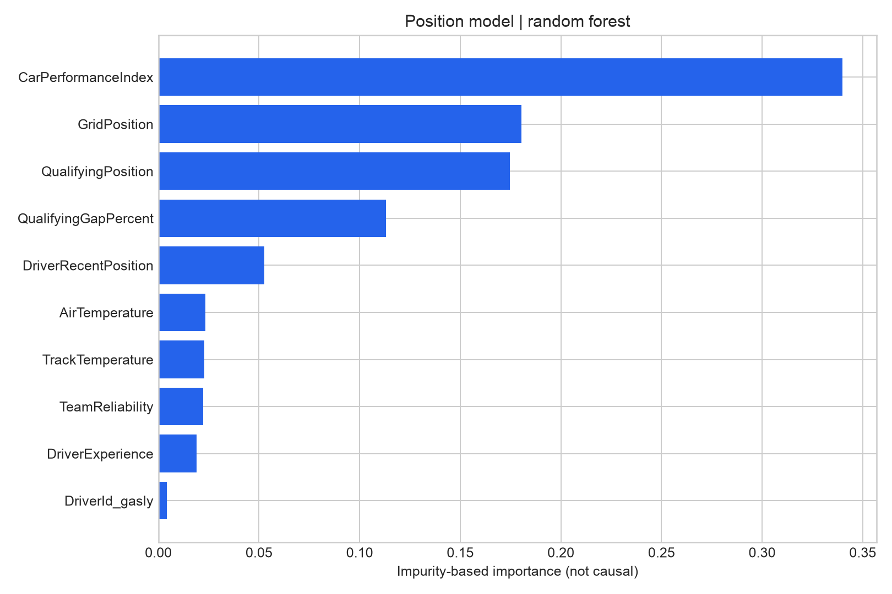
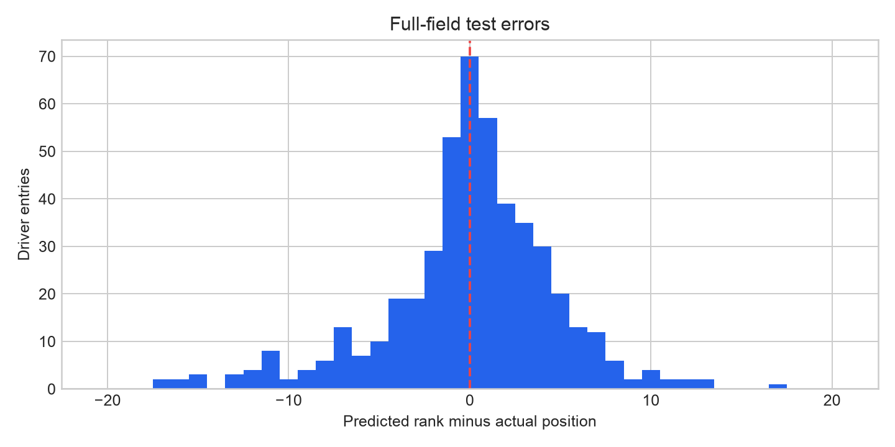

Formula 1.
Before lights out.
Predict finishing positions, estimate retirement risk, and forecast a complete race order.
Built by Aziz Mohammad, UIC Mechanical Engineering. A motorsport data project connecting engineering analysis with machine learning.
01 / Project scope
Three predictions. One pre-race boundary.
The completed pipeline uses qualifying observations, the confirmed grid and previous race results. It turns those inputs into a conditional finishing-position estimate, a retirement probability, and a unique position for every driver in the supplied field.
From prototype to final model
The original single-season baseline expanded to three seasons, explicit season-level evaluation, retirement classification, full-field ranking, and commands for preparing upcoming-race inputs.
Historical data snapshots, source provenance, model files generated by training, regression tests, and evaluation artifacts make the process reproducible.
Known before the start
Prediction occurs after qualifying and final grid publication. No current-race finish, points, race-lap times or pit stops enter the feature matrix.
Live telemetry, strategy optimization, tire degradation, DRS and engine-specific failure physics are outside the completed pre-race scope.
02 / Validation design
Choose on earlier seasons. Test on a later one.
- Collect. FastF1 qualifying and classification data for 2023–2025, with caching, completeness checks and a Jolpica results fallback.
- Engineer. Grid, qualifying position and pace gap, driver/team history, qualifying compound, and surface/air temperatures. Weather is a rainfall proxy, not measured track wetness.
- Select. Fit candidates on 2023; use 2024 finisher MAE for position-model selection and retirement Brier score for classifier selection.
- Evaluate. Refit selected models on 2023–2024 and test on all 24 races of 2025. Fit preprocessing only inside the training partition.
- Deploy. After freezing test results, refit model types on 2023–2025 for future-race predictions. That refit has no independent test score.
How a field becomes an order
The ranking score blends predicted finishing position with retirement probability and the typical classified position of retired drivers in training data. Scores are sorted, with grid position and driver ID breaking ties.
This guarantees a unique 1-to-N order, but remains a ranking heuristic rather than a physical race simulation.
Test evaluation predicts one GP at a time: earlier completed 2025 races update historical features for later ones. The evaluation model weights remain fixed.
| Model | Validation MAE |
|---|---|
| Random Forest | 2.30 |
| Gradient Boosting | 2.42 |
| Linear Regression | 2.65 |
03 / Measured performance
What the 2025 holdout actually shows.
2025 was explored during the original prototype. It is held out of final-stage fitting and selection, but is not a never-inspected external benchmark.
Finisher-only position prediction achieved MAE 2.43, MSE 10.38 and R² 0.612. Full-field evaluation is harder: it includes retired, non-starting and disqualified entries. MAE is average absolute error, not a confidence interval.
Full-field ordering
| Ordering | MAE | MSE | Race Spearman |
|---|---|---|---|
| Combined model | 3.41 | 23.33 | 0.648 |
| Position-only model | 3.40 | 23.34 | 0.647 |
| Starting-grid baseline | 3.34 | 23.09 | 0.651 |
Starting-grid order had slightly lower full-field MAE. The added model complexity did not beat that baseline on this test season.
Winner accuracy: 58.3%. Podium recall: 77.8%. These are retrospective results on 24 races, not future-race guarantees.
Retirement probabilities
| Model | Brier (lower is better) | ROC AUC |
|---|---|---|
| Retirement model | 0.0969 | 0.584 |
| Constant training rate | 0.0968 | 0.500 |
The retirement model narrowly missed the constant-rate baseline on Brier score. Treat its probabilities as exploratory estimates, not reliable warnings about individual drivers.
The classifier is evaluated on 470 eligible starters, including 51 retirements. DNS and disqualifications are excluded from this classifier metric; crashes and mechanical failures are both counted as retirements.




Feature importance and error distribution


Feature importance describes the fitted model, not a causal relationship.
Per-team full-field test error
| Team | MAE | Entries |
|---|---|---|
| Alpine | 3.15 | 48 |
| Aston Martin | 3.68 | 47 |
| Ferrari | 3.40 | 48 |
| Haas F1 Team | 3.77 | 48 |
| Kick Sauber | 4.21 | 48 |
| McLaren | 2.48 | 48 |
| Mercedes | 3.19 | 48 |
| Racing Bulls | 3.54 | 48 |
| Red Bull Racing | 2.73 | 48 |
| Williams | 3.98 | 48 |
04 / Inspect the forecasts
One race, every driver.
Explore retrospective forecasts from the frozen evaluation model. These are held-out 2025 races, not live or upcoming-race predictions. The final deployment model is separate.
Loading the published test predictions.
| Predicted | Driver | Team | Actual | Retirement risk | Outcome |
|---|
05 / Engineering conclusions
Completion includes knowing the limits.
What worked
Strict time boundaries, stable driver/team IDs, complete-field validation and source-completeness checks make the pipeline auditable. Lapped finishers stay in the data; withdrawn drivers are not mislabeled as retirements.
The model can prepare upcoming-race inputs without touching current-race outcomes, and its deployment bundle can generate both probabilities and a unique order.
What needs more evidence
The combined order did not beat starting-grid order on full-season MAE, and retirement probability narrowly missed its Brier baseline. Those results remain visible instead of being tuned away on the test set.
Future regulation changes, qualifying weather, rare failures and unmodeled DNS/DSQ outcomes limit transferability. The next research step would require a new evaluation period.
06 / Reproduce or predict
Run the complete pre-race pipeline.
The repository contains the data, source code, tests, setup guide and exact measured outputs. Training regenerates both the frozen evaluation bundle and the later deployment bundle.
python -m pip install -r requirements.txt
python final_pipeline.py train
python -m pytest -qUse the README's prepare and predict commands for a future race after qualifying and confirmed grid publication. Only load model files you trust.
Data: FastF1 and Jolpica. Season datasets and provenance. Independent educational project; not affiliated with Formula 1.